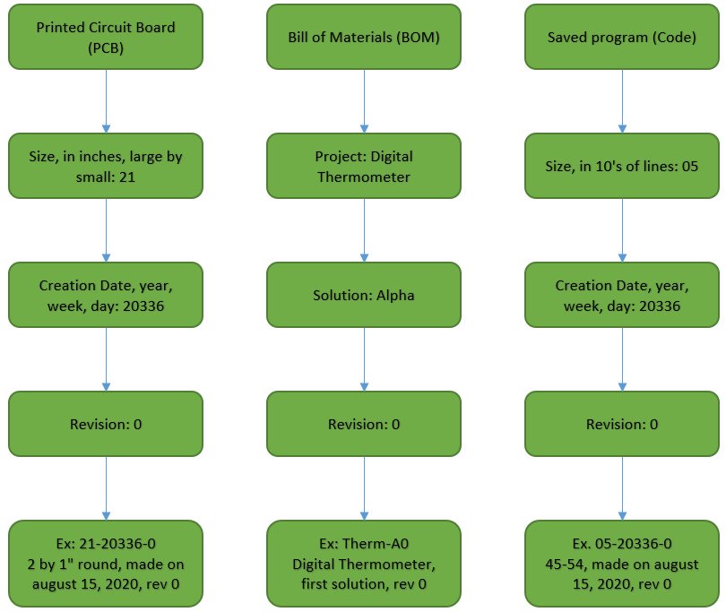

Description of Engineering Documentation Practices
This page provides an overview of the organization and nomenclature I've chosen to use throughout my documentation, written with those unfamiliar with industry standard practices in mind. This page also comprehensively describes my personal documentation practices, as for the time being they are simple enough to be described in a single page.
Release
I consider a document to be 'Released' if it should be treated as publicly available. Therefore, released work should be 'finished', and a document that is released should no longer be edited (though with mine, I occasionally make small edits, likely to address my own clerical errors). In particular, my own work is released when it either has been made available to a wider world or could be, and has a part number. For example, I consisder every document under the 'Engineering' folder on this website to be 'Released', by virtue of its being on this website and having a part number. As of writing, I have seperate part numbering schemes for the 3 things I create: Products, Boards, and Code.
Products, or Projects
In much of my personal documentation, I use the term 'Product', but occasionally I use 'Project' when it fits better. Here, 'Project' has a more accurate connoation, so I will use that. Most concretely, a project is a set of problems or goals that I would like solved. Projects are named descriptively to give a good first sense of the set of goals the projects contains. The only restrictions on project names is that they be unique within my set of projects. When deriving a part number from a project name, I will find some way to shorten it if it is long, and remove any spaces. I use care when selecting a stated set of goals for a project, but I will sooner reword or rework goals when they are reiterated in design rationale documents than contort representations of my work in those documents to match goals.
Solutions
A solution is directly associated with a design rationale document, which describes in an uncontrolled format why all the choices were made in this solution. In layman's terms, a solution is an answer to the set of problems posed by a project.
I use the NATO-phonetic alphabet (with 'alpha' not 'alfa', sorry) to designate different solutions. A solution designator is unique only to the project to which it's associated, such that there is only one 'Alpha' solution for a particular project. This gives each project 26 potential unique solutions, more than I expect to need. Solution names are designated in chronological order of when solutions are released, so that the 'Bravo' solution is never released before the 'Alpha' solution. Within a project, all solutions are only related by the set of problems that they solve (while this is the ideal, a solution may occasionally miss some, but never all, defined goals), not by how they solve the problem; think of the number of ways to skin a cat.
Revisions
Mistakes and errors in released projects are corrected by revisions. These are designated with mere numbers, and are zero indexed (the initial revision is '0'). All revisions of a particular solution are associated with the same design rationale, that is, the design rationale of that solution. Potentially two documents are unique to a particular revision: the Bill of Materials (BOM) and an optional errata note.
The BOM, at a minimum, lists all of the parts needed to construct the given revision of a solution. Additionally, it typically includes quantity, price, manufacturer, a readily understood description of each part, and its part number, if available. The BOM also lists anything I make custom that is needed by a revision. So, if you've wondered why I bother with this whole system of tracking released documents, this is why: inclusion of my own work in my own BOMs. Part numbers make the BOM a powerful document capable of precisely describing a complex solution to a problem with just a few lines of text, and usually empower the BOM to imply how that all those parts should be assembled. The ambiguity removed has made the effort of creating these part numbering schemes worthwhile, in my eyes.
Errata are occasionally included to give helpful notes that explain what errors were addressed. However, if the errors are very minor, I allow the existence of a revision to imply the needed errata, namely, that there were errors in a previous revision that aren't in this one. Note, on this website I sometimes will not make available every revision, but I will always make available the latest revision, which should be the most mistake-free. Additionally, if a solution has only its initial revision (just its vision) then I will list that on the same page as the design rationale.
Boards
Printed Circuit Board (PCB) design is what I consider my key techincal skill, and is the one which I am most keen to develop. While a board is typically assiociated with just one revision, I've kept the part numbering scheme completely seperate so that they require proper reference in the BOM. Additionally, since part numbers are usually only guranteed to be unique to a particular manufacturer, I use a pseudonym to refer to the Joseph that makes boards. Tyipcally this is "Joe's Boards" or "JDboard".
The part number for boards I design carries 3 pieces of numeric information, seperated by hyphens. First, I use 2 digits to refer to the size in inches of the board, rounded to the nearest integer, with one digit being the length and the other being the width. The first digit is always the larger of the two, if they are not equal.
The second piece of information is the date of release, which uses 5 digits. It is specified in order of year (2 digits), week of the year (2 digits), and day of the week (1 digit, with Monday being the first day of the week). The final piece of information is the revision number, which serves just the same purpose as the revision number for products. This could be any number of digits, but is usually just one. See the graphic for examples.
Code
I code because I have to, not because I like to. The pseudonym I give to the fictional manufacturer of my code is typically "Joe's Code" or "JDcode". Similar to boards, the part number contains 3 pieces of numerical information, seperated by hyphens. The first is the size of the code in 10's of lines, rounded to the nearest 10. Two digits are alloted for this, allowing me to make code up to 994 lines long. While it is concievable that I may one day write code with more lines, I sure hope that day doesn't come. The next two piece of information are exactly identical to the date and revision portions of the part numbering scheme for boards, respectively.